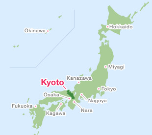
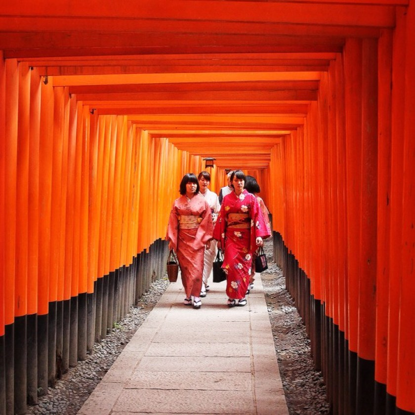

The history of Kyoto
Kyoto prefecure is located in west -central Honshu island in Japan. The distance between Tokyo and Kyoto is 2h and half if you use JR Tokaido Shinkasen (bullet train) Kyoto is oldest cities in Japan, it ws originally made in Heian era,794 and it was capital of Japan for more than 1000 years until 1868. At that time in Kyoto, Buddhist has a strong power and that involves to the Imperial government. Emperor Kanmu was scared to be cotroled by Buddhist religion group, so he decided to relocate the capital from Kyoto where there a lot of temple and Buddhism thrive to Kyoto. After Meiji Restoration in 1868, the imperial household moved to tokyo. Kyoto is literally means Capital City . It had been called Heian-kyo which means "Capital of Peace and Tranquillity", Miyako which means "The Capital" in the past.
In Kyoto is the cetral of Buddhism in Japan that is why there are a lot of temle in Kyoto. Durling World War 2, Kyoto was removed from Candidates of dropping atomic bomb.over 2000 religious places, 1600 buddhist temples and 400 shinto shrines, alsogardens and architecture, Kyoto was valued as the place where the wolrd should protect. Several of Kyoto's temple and garden were added as UNESCO World Heritage site in 1994.
Where to go
I made this website to tell about Kyoto more and plan the trip to Kyoto for this winter. I will go this December or January with Ayaka san. I went Kyoto a few times, with my familys and Middle School trip. I visited Kiyomizu dera, Nijyoujyou and
- Fushimi Inari Taisha
- Kiyomizu-dera tmple
- Back road and Downtown (shitamati)
-

- Kiyomizu-dera tmple
- Back road and Downtown (shitamati)

Wasyoku
- Nishiki MArket
- Wagashi
.jpeg)